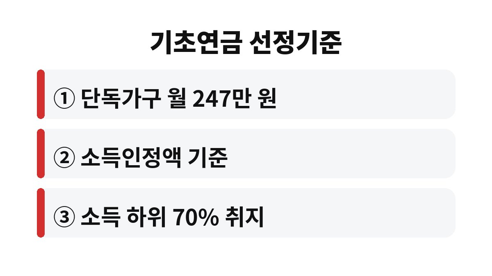

2026년 기초연금 선정기준액은 단독가구 기준 월 247만 원이고, 소득과 재산을 합친 소득인정액이 이 금액 이하여야 받을 수 있다. 부모님이 기초연금을 받고 계시거나 곧 신청할 예정이라면, 집과 재산이 있어도 받을 수 있는지가 가장 궁금하지 않을까?
가장 많이 헷갈리는 부분이 이 247만 원이다. 월 소득이 247만 원 이하면 된다는 뜻이 아니라, 소득인정액이 247만 원 이하여야 한다는 뜻이다. 소득인정액은 월 소득에서 일정 금액을 공제한 값에, 재산을 월 소득으로 환산한 금액을 더해서 계산한다.
한국경제가 최근 보도한 내용에 따르면, 이 기준액은 1인 가구 기준중위소득 256만 원의 96.3% 수준이다. 소득 계산에서는 월 116만 원을 먼저 빼 주고, 남은 금액의 30%를 추가로 공제해 준다. 근로소득이 있는 어르신도 공제 덕분에 생각보다 계산상 소득이 낮게 잡힐 수 있다는 얘기다.

집이 있다고 무조건 탈락하는 건 아니다. 재산은 그대로 계산하지 않고, 일정 금액을 먼저 공제한 뒤 남은 부분을 월 소득으로 환산한다. 보도에 따르면 대도시 기준 재산 공제액은 기초생활보장이 약 9,900만 원인 반면 기초연금은 1억 3,500만 원으로 더 넉넉하다.
또 재산을 소득으로 바꾸는 비율도 기초생활보장은 월 4.17%인데 기초연금은 월 0.33%에 그친다. 같은 재산이라도 기초연금에서는 소득으로 훨씬 적게 잡힌다는 뜻이다. 그래서 집은 있어도 소득이 거의 없는 어르신은 수급 대상이 될 수 있다.
기사에는 이런 계산 사례도 나온다. 다른 재산이 없다면 월 근로소득이 468만 원이어도 수급 대상이 될 수 있고, 실거래가 17억 원짜리 아파트를 가진 소득 없는 노부부도 월 55만 원 정도를 받을 수 있다는 가상 계산이다. 다만 이는 특정 조건을 전제로 한 계산이어서, 모든 경우에 해당하는 건 아니다.
이 부분은 오해가 많다. 해당 보도에서 남인순 의원실이 보건복지부 자료를 분석한 결과, 2025년 말 기준 소득인정액 상위 1% 수급자의 공제 전 일반재산 평균은 3억 4,000만 원이었다. 공제 전 월평균 근로소득은 219만 8,000원이었고, 근로소득이 있는 노인만 따로 보면 257만 8,000원이었다.
의원실은 "부자 노인이 기초연금을 받는다는 식의 주장은 다소 부풀려진 측면이 있다"고 지적했다. 제도의 취지는 소득 하위 70%인데, 직역연금 수급자를 빼면 실제 수급 비율은 80% 안팎이다. 정부는 하위 70% 기준은 유지하되 소득 수준에 따라 지급액에 차이를 두는 방안을 마련했다고 한다.
기초연금은 제도가 바뀌는 중이라 기준이 해마다 달라질 수 있다. 그래서 막연히 안 된다고 생각하지 말고, 아래 세 가지를 먼저 점검해 보자.
첫째, 월 소득이다. 연금, 근로소득, 이자 등을 합쳐 공제 후 얼마가 되는지 본다.
둘째, 재산 가액이다. 집, 예금, 자동차 등을 합치되 공제액이 적용된다는 점을 기억하자.
셋째, 신청 여부다. 만 65세가 되면 생일이 속한 달의 한 달 전부터 신청할 수 있다.
결국 핵심은 "집이 있느냐"가 아니라 "소득인정액이 기준 아래냐"이다. 같은 집을 가졌어도 소득이 있는지, 다른 금융재산이 얼마인지에 따라 결과가 갈린다. 그래서 이웃이나 지인이 받는다고 해서 우리 부모님도 받는다고 단정하기 어렵고, 반대로 안 될 거라는 소문만 믿고 신청을 미루면 받을 수 있는 돈을 놓칠 수 있다. 소문보다 내 숫자로 확인하는 것이 가장 정확하다.
정확한 금액은 가까운 주민센터나 복지로에서 모의계산을 해 보면 바로 나온다. 어차피 신청해서 손해 볼 일은 없으니 일단 계산부터 해 보는 게 좋다. 부모님은 기초연금을 받고 계신가요? 댓글로 궁금한 점을 남겨 주세요.
도움이 되셨다면 구독해 두시고, 다음 글에서 또 만나요.
본 글은 한국경제 보도(2026.10.31)를 참고한 일반 정보이며 투자 권유가 아닙니다. 실제 수급 여부와 금액은 관할 기관에서 확인하세요.